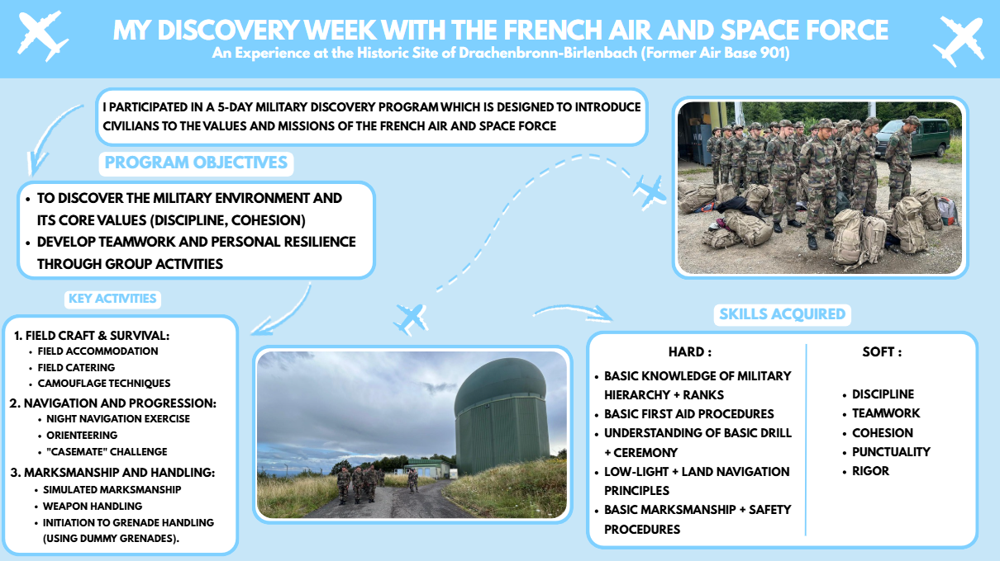

SAÉ 2.05
Portfolio
Objectif
Concevoir un poster qui retrace une expérience professionnelle significative afin d'analyser les softs et hards skills qu'on estime avoir développées
Architecture réalisée
- Au niveau de l'identité visuelle, j'ai du faire un choix au niveau de la charte graphique, de la typographie et de la disposition des éléments sur Canva pour assurer une bonne lisibilité.
- Pour l'architecture de l'information, j'ai organisé de façon hiérarchique le contenu pour permettre une lecture efficace du poster.
- J'ai utilisé Word pour la partie rédaction, afin d'assurer une mise en page professionelle, une gestion des références et une structure logique du document réfléxif.
- J'ai donc utilisé Canva (création graphique), Microsoft Word (rédaction et synthèse réflexive).
Compétences R&T mobilisées
- AC12.01 : Concevoir et développer une application simple.
- AC12.02 : Intégrer des services dans une application
Technologies
Preuve
